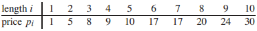
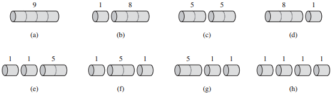
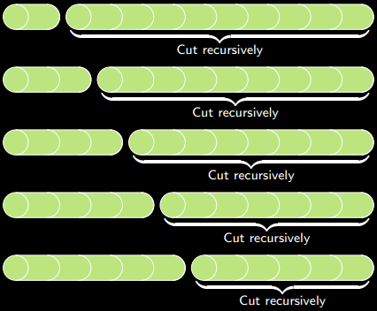
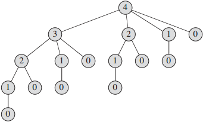
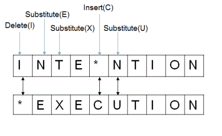
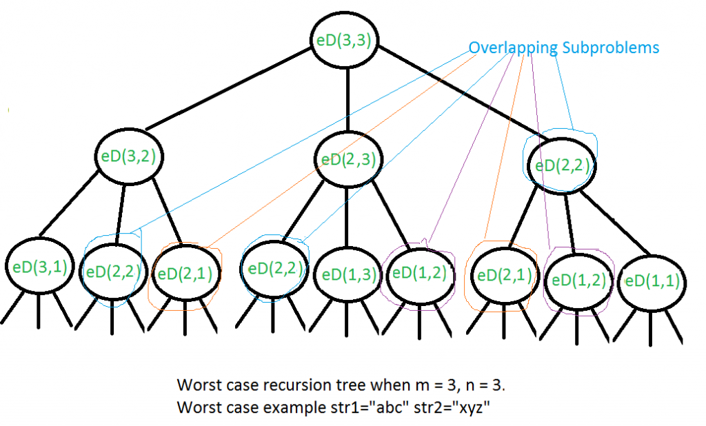
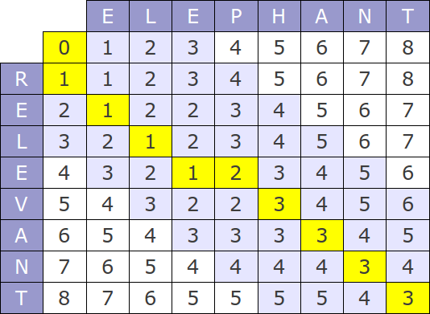

Dynamic programming
Dynamic programming is a method of solving problems by breaking them down into smaller, overlapping subproblems. Each time we solve a subproblem, we store the answer in a table, so we only have to solve each subproblem once.Dynamic programming is often used to solve optimization problems, where we want to find a solution with the minimum or maximum value. After we find optimal solutions to the subproblems, we use those solutions to construct an optimal solution to the original problem.

Array of prices. Source: Cormen p. 360

8 possible ways to cut up a rod of length 4. Source: Cormen p. 361
Rod cutting problem
We are given a rod of integer length n, and an array of prices for each integer length. We want to cut up the rod and sell the pieces to maximize the total price.At each of n-1 spots, we can either cut or not cut, so there are 2n-1 possible solutions. If n is large, it would take too long to check all of them.
Recursion strategy

For each possible leftmost cut,
solution = (left piece) + (optimal cutting of right piece).
Source: cdn.cs50.net
- Consider each possible place to make the leftmost cut.
- Each possible solution can be defined recursively:
(value of left piece) + (optimal solution for cutting up the right piece) - Check which solution is best.

Recursion tree with overlapping subproblems.
The number is the length of the rod.
Source: Cormen p. 364
Using dynamic programming
There are two ways to implement dynamic programming.- In the top-down approach, we solve the problem recursively. The function first checks if the subproblem has already been solved. If so, it returns the answer. If not, it computes and stores the answer, then returns it.
- In the bottom-up approach, we solve each subproblem non-recursively and store the answer, starting with the smallest subproblem.
Runtime
If n is the rod length, there are n subproblems. For each subproblem we consider n possible leftmost cuts, so the runtime is O(n2).
Many problems that seem to be exponential can be solved in polynomial time with dynamic programming, as long as the number of subproblems is polynomial.
Sample code
RodCutting (top-down, bottom-up)

Edit distance. Source: ideserve.co.in
Edit distance
We are given two words, and we want to find the shortest sequence of edits to transform one word into the other. An "edit" can be an insertion, deletion, or substitution. For example, the distance from "intention" to "execution" is 5 (see the image).Edit distance is an important component of automatic spelling correction.
Recursion strategy
There are 4 choices of what to do with the last letter of each string. Calculate the edit distance for each case and choose the smallest one.In each case, the solution incorporates an optimal solution to a subproblem.
In cases 2, 3, and 4, we add 1 for the edit involving the final letter.

Recursion tree with overlapping subproblems.
Source: geeksforgeeks.org

Edit distance table. Source: xoptutorials.blogspot.com
they
say
No edit for last letter:
Find the distance from "the" to "sa".
you
four
Insertion:
Find the distance from "you" to "fou" and add 1.
when
the
Deletion:
Find the distance from "whe" to "the" and add 1.
than
them
Substitution:
Find the distance from "tha" to "the" and add 1.
Using dynamic programming
We can use a 2D array to store the answers. For each i and j, store the distance between the first i letters of the first string and the first j letters of the second string.Runtime
If the string lengths are m and n, the number of subproblems is (m+1)(n+1). For each subproblem we do a constant number of operations, so the runtime is O(mn).
Sample code
EditDistance (bottom-up)